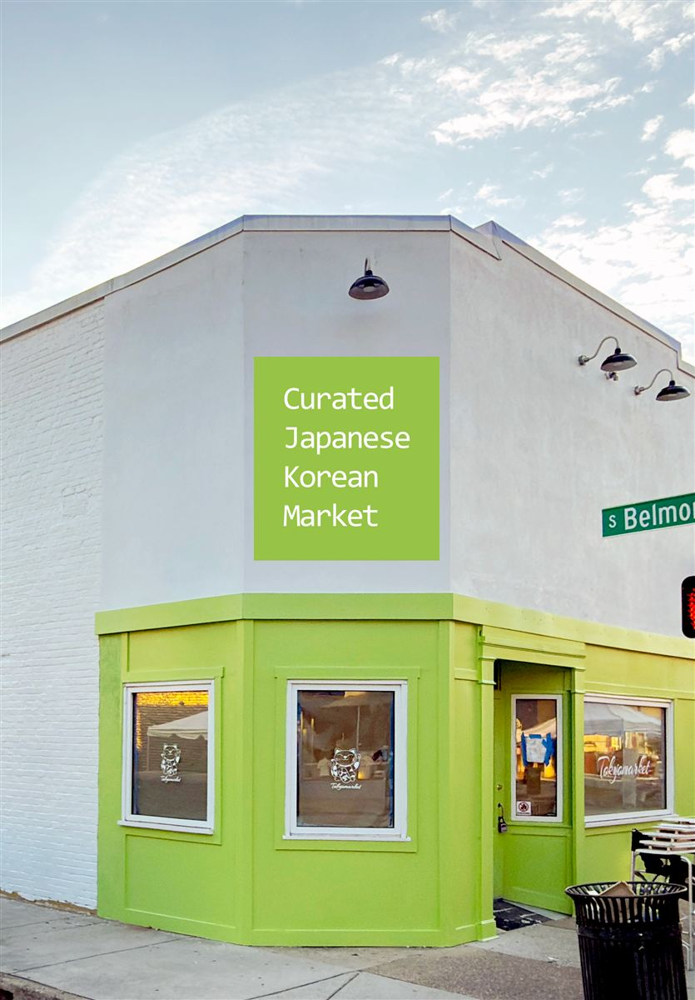

The Corner Letters
Two things to pick. No rush.
You said the J still did not look right. Thank you for telling me. I looked for letters with a flat top, and the middle line centered under that top, the way you described. Here are three new ones.
You also asked for the 3030 address number to be a little darker. I did that. It is below the letters.
Look whenever you have a minute. Tonight, tomorrow, or later this week is all fine.
For reference only
What we already tried
These are not choices. They are only here so you can see what changed.


A small idea, only if it helps
You already have someone who made your colors and your logo. A designer usually finishes small details like this letter before it reaches a painter. If it is easier, you can send this page to your designer. They can tell me exactly what to change. This could save you time and save you money. There is no pressure at all. I am glad to keep helping you find the right letters.
What the red button does
It opens a text message with your two picks already written. You can read it first and change it. Nothing is sent to me until you press send in your messages.
You can also change your picks on this page as many times as you want.
What happens next
Once you pick the letters and the 3030 color, the front is finished.
Then I paint your letters onto the wall in a new picture, so you can see them on the real building instead of on a plain background.
I will also design the Belmont Ave side so it matches the front.
After that I send you one last set of pictures. It will show the whole building from every side, with everything you have chosen already in place: the Haru sign, the corner sign, the 3030 number, the letters by the window, and the Belmont side.
Nothing here is final. We can change anything.